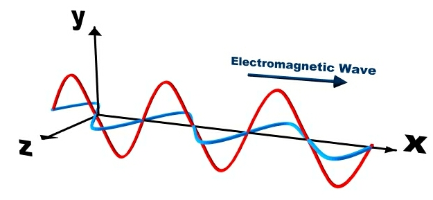
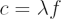

Electromagnetic radiation is the name given to a pair of electric and magnetic fields that propagate together at the speed of light. Examples of electromagnetic radiation are visible light, radio waves, X-rays and gamma rays – all parts of the electromagnetic spectrum.
Throughout the 19th century, a number of experiments were performed by physicists such as Michael Faraday, Andre Ampere and Wilhelm Weber. They discovered a strong relationship between the properties of electricity and magnetism. James Clerk Maxwell gathered together these earlier results in his ‘Treatise on Electricity and Magnetism’ (1873) and stated the four relationships that now bear his name. Maxwell’s Equations provide several fundamental relationships between the motion of charged particles in electric and magnetic fields, and the behaviour of electric and magnetic fields.
An important prediction from Maxwell’s Equations is that a pair of electric and magnetic waves can propagate together with a speed (in a vacuum) of c = 299,792,458 m/s. This speed is referred to as the speed of light (in a vacuum).

As shown in the diagram above, the electric and magnetic fields oscillate (vibrate) at right angles to each other, and the wave moves in a direction at right angles to these fields. This type of wave motion is called a transverse wave. Compare this to a sound wave which is a longitudinal (compression) wave – the vibrations are in the direction of the wave motion. The resulting electromagnetic (EM) wave does not need a medium to help transmit it, so an EM wave can move freely through a vacuum. This is very different to a sound wave which requires a medium (gas, liquid or solid) to sustain it.
An EM wave is described in terms of its:
- Frequency (f): the number of waves that pass in an interval of time. Frequencies are usually measured as waves per second or cycles per second, which is given the unit of Hertz (Hz); and
- Wavelength (λ): the distance between successive crests or troughs in the wave. If frequencies are measured in Hz, then wavelengths are measured in metres (m).
These two properties are related by the wave equation:

The longer the wavelength, the lower the frequency, and vice versa. Although Maxwell’s Equations do not place any limits on the range of allowed wavelengths and frequencies, the known electromagnetic spectrum extends from frequencies around f = 3 × 103 Hz ( λ = 100 km) to f = 3 × 1026 Hz (λ = 10-18 m). This covers everything from long radio wavelengths to high-energy gamma rays.
Although we usually talk about EM radiation in terms of waves, quantum mechanics suggests that EM radiation can also behave like discrete particles, called photons.